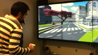
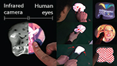

Research Projects

SoftAR: Visually Manipulating Haptic Softness Perception in Spatial Augmented Reality
(IEEE ISMAR 2014/2015, IEEE TVCG 2015, ACM SIGGRAPH 2016 [Invited Talks], and MIRU 2016 [Invited Talks])
We present SoftAR, a novel spatial augmented reality (AR) technique based on a pseudo-haptics mechanism that visually manipulates the sense of softness perceived by a user pushing a soft physical object. Considering the limitations of projection-based approaches ...
(IEEE ISMAR 2014/2015, IEEE TVCG 2015, ACM SIGGRAPH 2016 [Invited Talks], and MIRU 2016 [Invited Talks])
We present SoftAR, a novel spatial augmented reality (AR) technique based on a pseudo-haptics mechanism that visually manipulates the sense of softness perceived by a user pushing a soft physical object. Considering the limitations of projection-based approaches ...

LazyNav: 3D Ground Navigation with Non-Critical Body Parts
(ICAT-EGVE 2014, IEEE 3DUI 2015 [Best paper award], and IEEE TVCG 2016)
We propose a mid-air ground navigation control model which lets the user’s hands, eyes or local head orientation completely free, making use of the remaining tracked body elements to tailor the navigation. We also study its desired porperties, such as being easy ...
(ICAT-EGVE 2014, IEEE 3DUI 2015 [Best paper award], and IEEE TVCG 2016)
We propose a mid-air ground navigation control model which lets the user’s hands, eyes or local head orientation completely free, making use of the remaining tracked body elements to tailor the navigation. We also study its desired porperties, such as being easy ...

DeforMe: Visualization of Tangential Surface Deformation using Invisible Textures
(KJMR2013 [Best presentation award], ACM SIGGRAPH Asia 2013: Emerging Technologies, and Springer-Verlag Virtual Reality 2015)
We proposed a technique to estimate the surface deformation using invisible textures. We aimed to used proposed technique to support the surface visualization in projection-based mixed reality technologies ...
(KJMR2013 [Best presentation award], ACM SIGGRAPH Asia 2013: Emerging Technologies, and Springer-Verlag Virtual Reality 2015)
We proposed a technique to estimate the surface deformation using invisible textures. We aimed to used proposed technique to support the surface visualization in projection-based mixed reality technologies ...